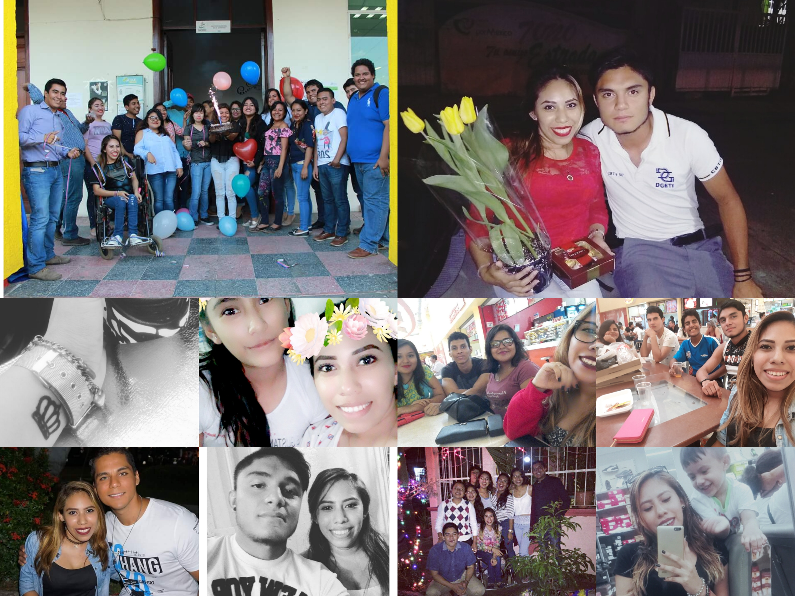

MIS PASATIEMPOS SON:
Escuchar musica:
Energia
Asi soy yo
Yo te extrañare
No hay nadie más
Fuiste tu
Salir con mis amigos:

Ver peliculas:
Titanic
Querido Jonh
Yo antes de ti
Siempre el mismo día
Rapido y furiosos (todas)
Ver series:
Lucifer
El barco
Sabrina
Diario de Vampiros
The Good Doctor
Elementary